Cristian Taraborrelli signs the creative direction and show design for «Avanti, Striding Forward», the 10th Annual Conference of the National Commercial Bank — the largest bank by assets in the Arab world. Over 500 guests from Saudi Arabia are welcomed in Rome for a four-day event culminating in a spectacular gala show dinner at the Casa delle Armi in the Foro Italico.
A three-act show dinner that brings to life unprecedented artistic combinations: live performance, video show, and the interaction between state-of-the-art technologies and classical artistic expressions, in a fascinating and immersive mix.
Cristian Taraborrelli firma la direzione creativa e la regia dello show «Avanti, Striding Forward», la decima Conferenza Annuale della National Commercial Bank — la più grande banca per patrimonio del mondo arabo. Oltre 500 ospiti dall’Arabia Saudita vengono accolti a Roma per un evento di quattro giorni che culmina in uno spettacolare gala show dinner alla Casa delle Armi del Foro Italico.
Lo show dinner in tre atti dà vita a inedite combinazioni artistiche: live performance, video show, interazione tra tecnologie state of the art ed espressioni artistiche classiche in un mix affascinante e coinvolgente.
Cristian Taraborrelli signe la direction créative et la mise en scène de «Avanti, Striding Forward», la 10ème Conférence Annuelle de la National Commercial Bank — la plus grande banque en termes d’actifs du monde arabe. Plus de 500 invités d’Arabie Saoudite sont accueillis à Rome pour un événement de quatre jours culminant avec un spectaculaire gala show dinner à la Casa delle Armi du Foro Italico.
Le show dinner en trois actes donne vie à des combinaisons artistiques inédites : performance live, vidéo show et interaction entre technologies de pointe et expressions artistiques classiques, dans un mélange fascinant et immersif.
Lo Show — Tre Atti
The gala show dinner revolves around the symbol of the Arabian white horse — beauty, strength, and leadership — unfolding in three acts that build towards an unforgettable climax.
Act I — Beauty & Perfection. Italian opera classics by Verdi, Bellini, and Rossini fill the monumental space. Choreography by Raphaëlle Boitel weaves through the music, while a black-and-gold lighting design transforms the Casa delle Armi into a luminous cathedral of sound.
Act II — Force. Original music and immersive video projections set the stage for the Sonics performers. Fire and water visual contrasts, acrobatic sequences, and digital art merge in a display of raw energy and physical precision.
Act III — Leadership. Oscar winner Luis Bacalov performs live at the piano, playing the unforgettable theme from Il Postino. Erika Lemay performs a breathtaking paso doble tango suspended in mid-air. The evening reaches its apex with the entrance of a live white Arabian thoroughbred — the embodiment of beauty, force, and leadership united.
Il gala show dinner ruota attorno al simbolo del cavallo bianco arabo — bellezza, forza e leadership — e si sviluppa in tre atti che costruiscono verso un climax indimenticabile.
Atto I — Bellezza e Perfezione. Classici dell’opera italiana di Verdi, Bellini e Rossini riempiono lo spazio monumentale. Le coreografie di Raphaëlle Boitel si intrecciano con la musica, mentre un light design in nero e oro trasforma la Casa delle Armi in una luminosa cattedrale di suono.
Atto II — Forza. Musiche originali e video proiezioni immersive preparano il palco per i performer Sonics. Contrasti visivi di fuoco e acqua, sequenze acrobatiche e arte digitale si fondono in un’esplosione di energia e precisione fisica.
Atto III — Leadership. Il premio Oscar Luis Bacalov suona dal vivo al pianoforte l’indimenticabile tema de Il Postino. Erika Lemay esegue un mozzafiato paso doble tango sospesa a mezz’aria. La serata raggiunge il suo apice con l’ingresso di un vero purosangue arabo bianco — incarnazione di bellezza, forza e leadership riunite.
Le gala show dinner tourne autour du symbole du cheval blanc arabe — beauté, force et leadership — et se déploie en trois actes construisant vers un climax inoubliable.
Acte I — Beauté et Perfection. Des classiques de l’opéra italienne de Verdi, Bellini et Rossini emplissent l’espace monumental. Les chorégraphies de Raphaëlle Boitel s’entrelacent avec la musique, tandis qu’un design lumière noir et or transforme la Casa delle Armi en une cathédrale lumineuse de son.
Acte II — Force. Musiques originales et projections vidéo immersives préparent la scène pour les performers Sonics. Contrastes visuels de feu et d’eau, séquences acrobatiques et art numérique fusionnent dans une explosion d’énergie et de précision physique.
Acte III — Leadership. Le lauréat de l’Oscar Luis Bacalov joue en direct au piano l’inoubliable thème de Il Postino. Erika Lemay exécute un paso doble tango à couper le souffle suspendue dans les airs. La soirée atteint son apogée avec l’entrée d’un véritable pur-sang arabe blanc — incarnation de beauté, force et leadership réunies.
Gallery

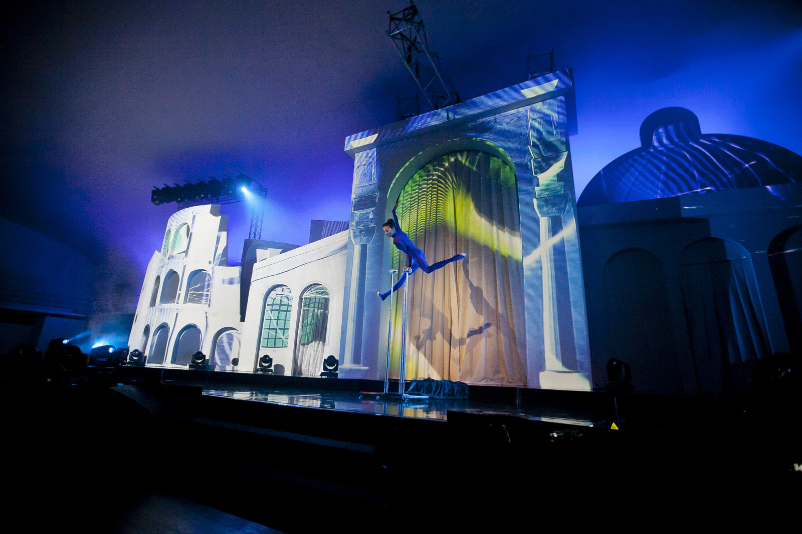
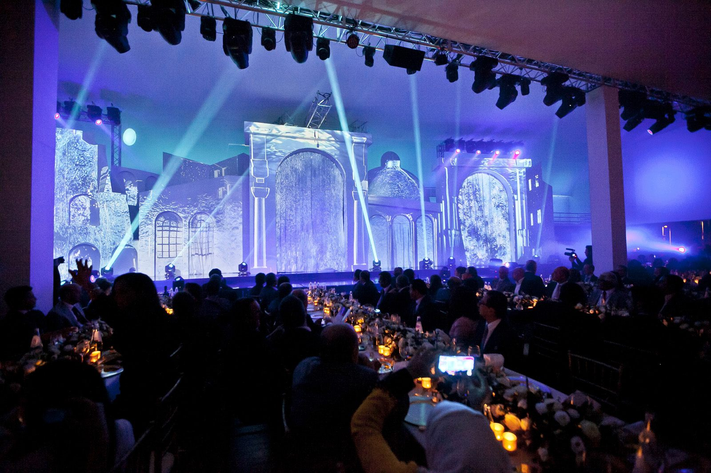
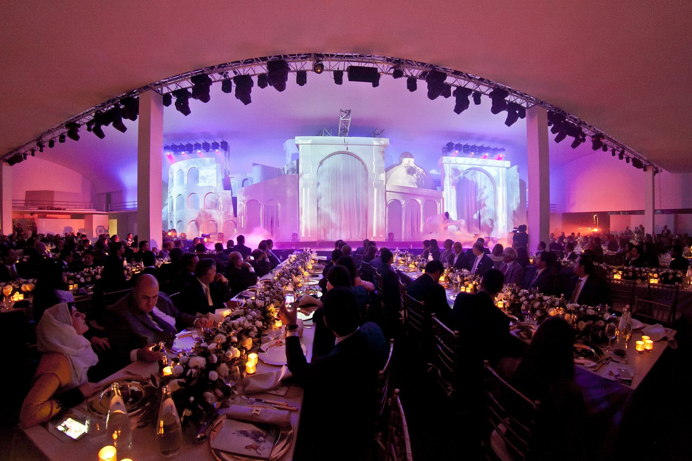
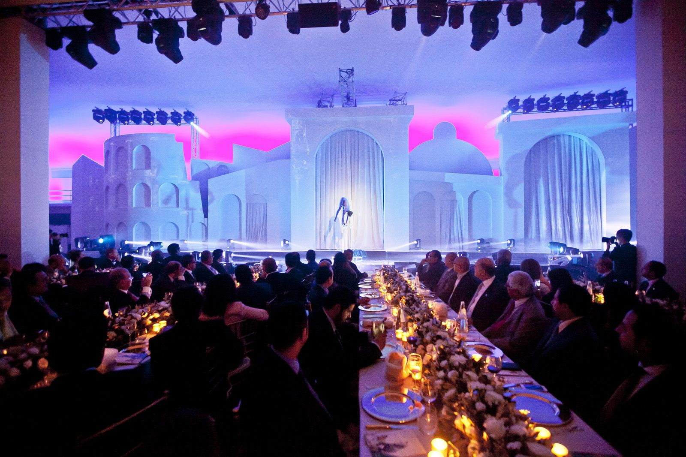

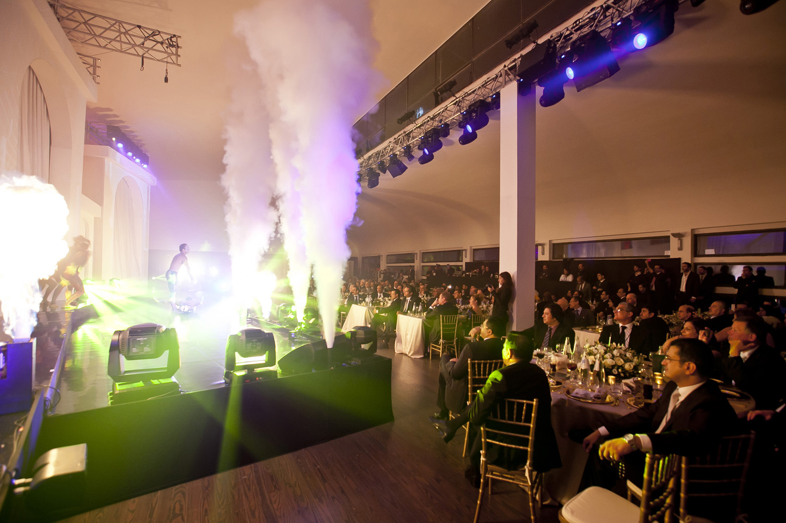
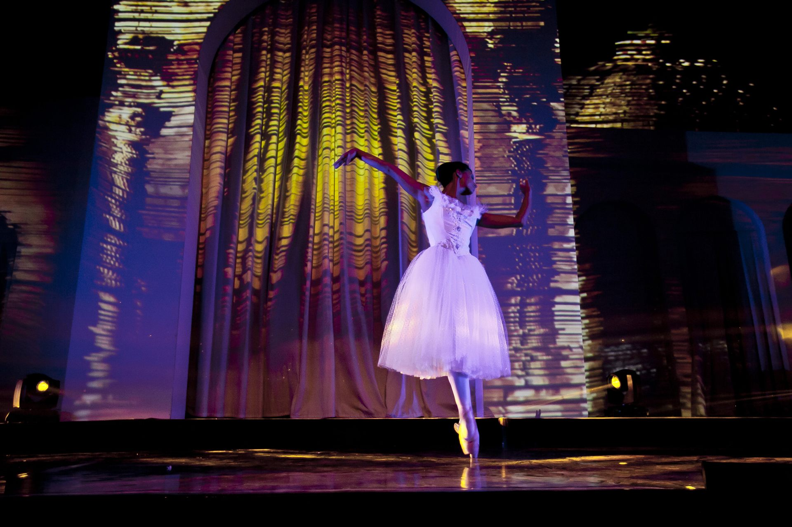
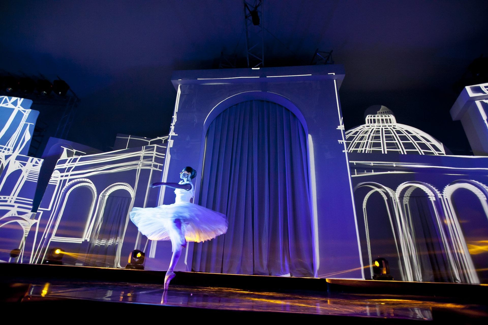
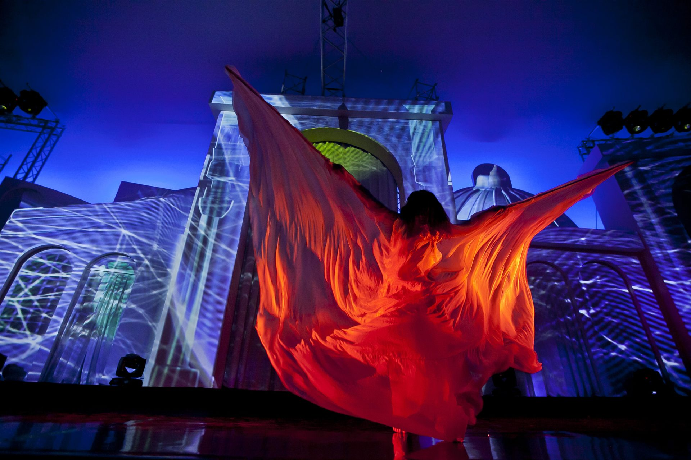
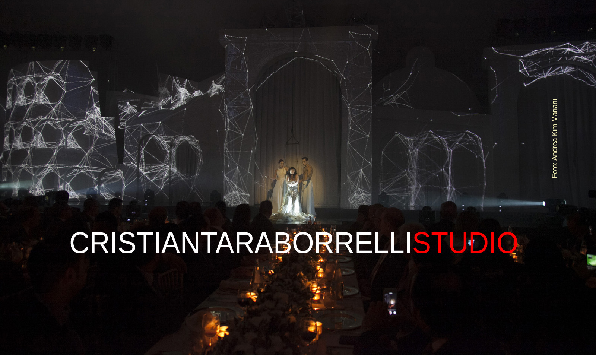
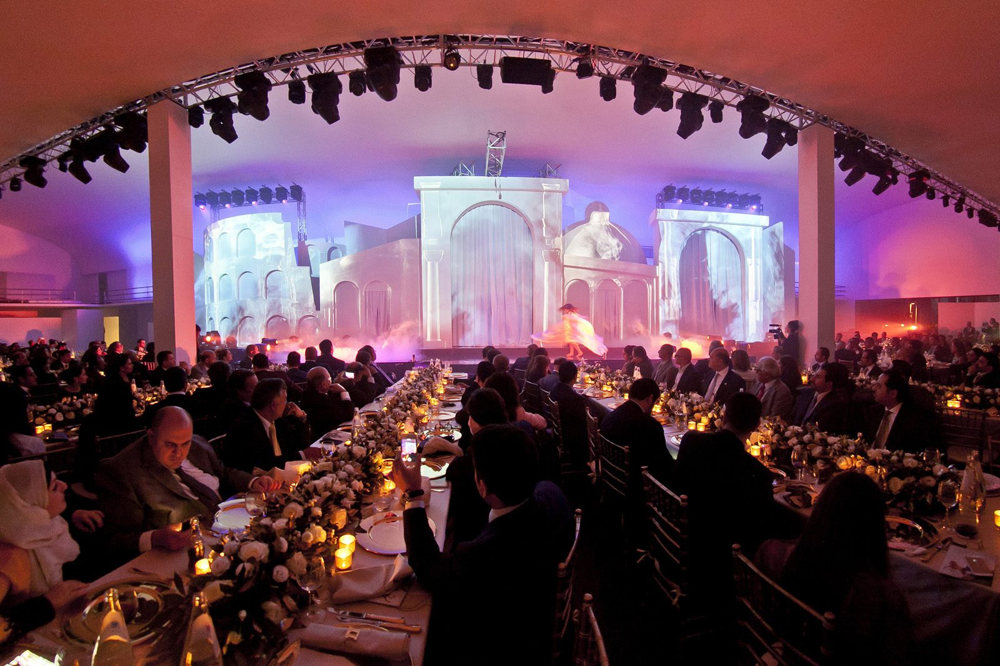
Video
La Location — Casa delle Armi
The Casa delle Armi (also known as the Accademia di Scherma) stands within the monumental Foro Italico complex in Rome. Designed by architect Luigi Moretti in 1933–1936, it is considered one of the finest examples of Italian Rationalist architecture. The building’s soaring marble interiors, dramatic natural light, and geometric purity make it an extraordinary setting for large-scale events — a space where architecture itself becomes spectacle.
La Casa delle Armi (nota anche come Accademia di Scherma) sorge all’interno del complesso monumentale del Foro Italico a Roma. Progettata dall’architetto Luigi Moretti nel 1933–1936, è considerata uno dei migliori esempi di architettura razionalista italiana. Gli interni in marmo dalle altezze vertiginose, la luce naturale drammatica e la purezza geometrica la rendono una cornice straordinaria per eventi su larga scala — uno spazio dove l’architettura stessa diventa spettacolo.
La Casa delle Armi (également connue sous le nom d’Accademia di Scherma) se dresse au sein du complexe monumental du Foro Italico à Rome. Conçue par l’architecte Luigi Moretti en 1933–1936, elle est considérée comme l’un des plus beaux exemples d’architecture rationaliste italienne. Ses intérieurs en marbre aux hauteurs vertigineuses, sa lumière naturelle dramatique et sa pureté géométrique en font un cadre extraordinaire pour des événements de grande envergure — un espace où l’architecture elle-même devient spectacle.
Curiosità
Un cavallo bianco arabo dal vivo. Il climax dello show è stato l’ingresso di un vero purosangue arabo bianco nella Casa delle Armi, simbolo vivente dei valori di bellezza, forza e leadership che attraversano i tre atti.
Luis Bacalov, premio Oscar. Il compositore argentino-italiano, vincitore dell’Oscar per la colonna sonora de Il Postino (1995), ha suonato dal vivo al pianoforte il celebre tema del film, creando un’atmosfera di rara intensità.
Erika Lemay sospesa nel vuoto. L’artista circense canadese, considerata una delle più grandi performer aeree al mondo, ha eseguito un paso doble tango sospesa a diversi metri dal suolo, combinando danza classica e acrobazia aerea.
La più grande banca del mondo arabo. La National Commercial Bank (NCB), fondata nel 1953, è il più grande istituto bancario dell’Arabia Saudita e del mondo arabo per patrimonio. La conferenza annuale è il momento più importante dell’anno per i vertici della banca.
Raphaëlle Boitel e il nuovo circo. La coreografa e performer francese, figura di spicco del nouveau cirque contemporaneo, ha firmato le coreografie del primo atto, fondendo opera italiana e movimento corporeo in una narrazione visiva inedita.
A live white Arabian horse. The climax of the show was the entrance of a real white Arabian thoroughbred into the Casa delle Armi, a living symbol of the values of beauty, strength, and leadership that run through all three acts.
Luis Bacalov, Oscar winner. The Argentine-Italian composer, winner of the Academy Award for the score of Il Postino (1995), performed live at the piano playing the film’s iconic theme, creating an atmosphere of rare intensity.
Erika Lemay suspended in mid-air. The Canadian circus artist, considered one of the greatest aerial performers in the world, performed a paso doble tango suspended several metres above the ground, combining classical dance and aerial acrobatics.
The largest bank in the Arab world. The National Commercial Bank (NCB), founded in 1953, is the largest banking institution in Saudi Arabia and the Arab world by assets. The annual conference is the most important moment of the year for the bank’s leadership.
Raphaëlle Boitel and new circus. The French choreographer and performer, a leading figure in contemporary nouveau cirque, created the choreography for the first act, merging Italian opera with physical movement in an unprecedented visual narrative.
Un cheval blanc arabe en chair et en os. Le point culminant du spectacle fut l’entrée d’un véritable pur-sang arabe blanc dans la Casa delle Armi, symbole vivant des valeurs de beauté, de force et de leadership qui traversent les trois actes.
Luis Bacalov, lauréat de l’Oscar. Le compositeur argentin-italien, lauréat de l’Oscar pour la bande originale de Il Postino (1995), a joué en direct au piano le célèbre thème du film, créant une atmosphère d’une rare intensité.
Erika Lemay suspendue dans le vide. L’artiste de cirque canadienne, considérée comme l’une des plus grandes performeuses aériennes au monde, a exécuté un paso doble tango suspendue à plusieurs mètres du sol, combinant danse classique et acrobatie aérienne.
La plus grande banque du monde arabe. La National Commercial Bank (NCB), fondée en 1953, est le plus grand établissement bancaire d’Arabie Saoudite et du monde arabe en termes d’actifs. La conférence annuelle est le moment le plus important de l’année pour les dirigeants de la banque.
Raphaëlle Boitel et le nouveau cirque. La chorégraphe et performeuse française, figure de proue du nouveau cirque contemporain, a signé les chorégraphies du premier acte, fusionnant opéra italien et mouvement corporel dans un récit visuel inédit.
Stampa
Team Creativo
Gli Artisti
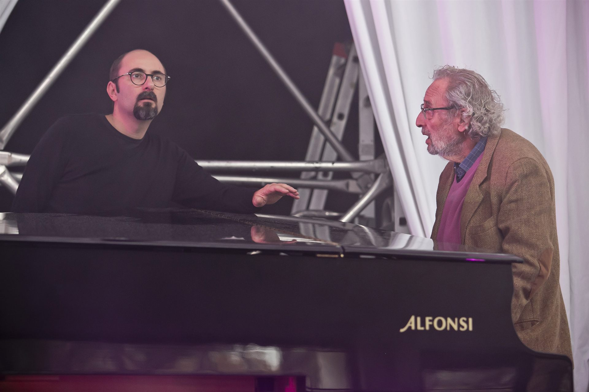
Luis Bacalov Oscar®
Compositore e Pianista · Atto III
Compositore e direttore d’orchestra argentino naturalizzato italiano (1933–2017). Premio Oscar nel 1996 per la colonna sonora de Il Postino, ha composto oltre 100 colonne sonore tra cui Django, La città delle donne di Fellini e Vangelo secondo Matteo di Pasolini. Per l’evento NCB ha suonato dal vivo al pianoforte il celebre tema de Il Postino. Argentine-Italian composer and conductor (1933–2017). Academy Award winner in 1996 for the score of Il Postino, he composed over 100 film scores including Django, Fellini’s City of Women, and Pasolini’s The Gospel According to St. Matthew. For the NCB event he performed the iconic Il Postino theme live at the piano. Compositeur et chef d’orchestre argentin naturalisé italien (1933–2017). Lauréat de l’Oscar en 1996 pour la musique de Il Postino, il a composé plus de 100 musiques de films dont Django, La Cité des femmes de Fellini et L’Évangile selon saint Matthieu de Pasolini. Pour l’événement NCB, il a joué au piano le célèbre thème d’Il Postino en direct.
Erika Lemay
Performance Aerea · Atto III
Creatrice di spettacoli, sky dancer e fondatrice di Physical Poetry®. Vanity Fair l’ha nominata “New Queen of Circus”; detiene un Guinness World Record per la caduta libera su tessuto aereo più alta al mondo (36,80 m, bendata). Vincitrice del Golden Buzzer unanime ad America’s Got Talent: Extreme. Per lo show NCB ha eseguito un mozzafiato paso doble tango sospesa a mezz’aria. Show creator, sky dancer and founder of Physical Poetry®. Named the “New Queen of Circus” by Vanity Fair, she holds a Guinness World Record for the highest suspended aerial silk free roll (36.80 m, blindfolded). Winner of a unanimous Golden Buzzer on America’s Got Talent: Extreme. For the NCB show she performed a breathtaking paso doble tango suspended in mid-air. Créatrice de spectacles, sky dancer et fondatrice de Physical Poetry®. Nommée « New Queen of Circus » par Vanity Fair, elle détient un record Guinness pour la plus haute chute libre sur tissu aérien (36,80 m, les yeux bandés). Lauréate du Golden Buzzer unanime à America’s Got Talent: Extreme. Pour le show NCB, elle a exécuté un paso doble tango à couper le souffle suspendue dans les airs.
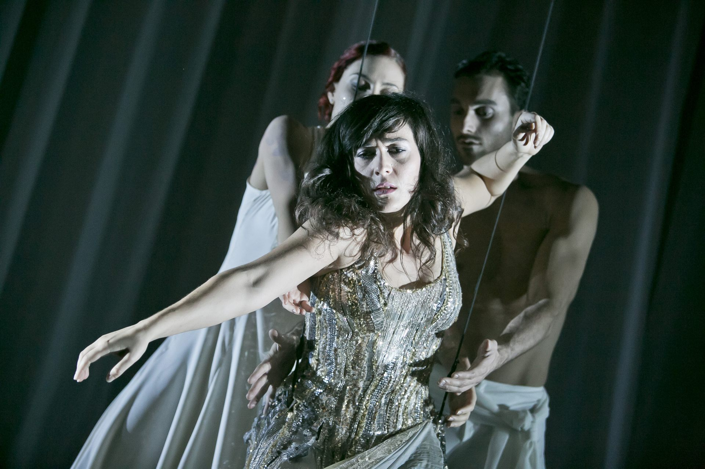
Raphaëlle Boitel
Coreografia · Atto I
Coreografa, regista e performer francese, fondatrice della Cie L’Oublié(e), compagnia convenzionata dal Ministère de la Culture. Ex artista della compagnia di James Thiérrée (nipote di Charlie Chaplin), crea spettacoli all’incrocio tra circo contemporaneo, teatro, danza, musica e cinema. Per l’NCB ha firmato le coreografie del primo atto, intrecciando opera italiana e movimento corporeo. French choreographer, director and performer, founder of Cie L’Oublié(e), a company supported by the French Ministry of Culture. Former artist with James Thiérrée’s company (Charlie Chaplin’s grandson), she creates work at the crossroads of contemporary circus, theatre, dance, music and cinema. For NCB she created the choreography for Act I, weaving Italian opera with physical movement. Chorégraphe, metteuse en scène et performeuse française, fondatrice de la Cie L’Oublié(e), conventionnée par le Ministère de la Culture. Ancienne artiste de la compagnie de James Thiérrée (petit-fils de Charlie Chaplin), elle crée des spectacles à la croisée du cirque contemporain, du théâtre, de la danse, de la musique et du cinéma. Pour NCB elle a signé les chorégraphies de l’Acte I, mêlant opéra italien et mouvement corporel.
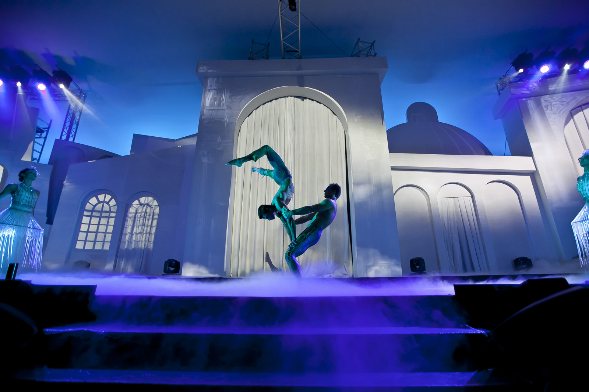
Sonics
Performer Acrobatici · Atto II
Compagnia di performer acrobatici specializzati in show ad alto impatto visivo con fuoco, acqua e effetti speciali. Per il secondo atto — Forza — hanno portato in scena sequenze acrobatiche e contrasti visivi di fuoco e acqua, fondendo energia fisica e arte digitale. Acrobatic performance company specialising in high-impact visual shows with fire, water and special effects. For Act II — Force — they brought to the stage acrobatic sequences and visual contrasts of fire and water, merging physical energy with digital art. Compagnie de performers acrobatiques spécialisée dans les spectacles visuels à grand impact avec feu, eau et effets spéciaux. Pour l’Acte II — Force — ils ont porté sur scène des séquences acrobatiques et des contrastes visuels de feu et d’eau, fusionnant énergie physique et art numérique.
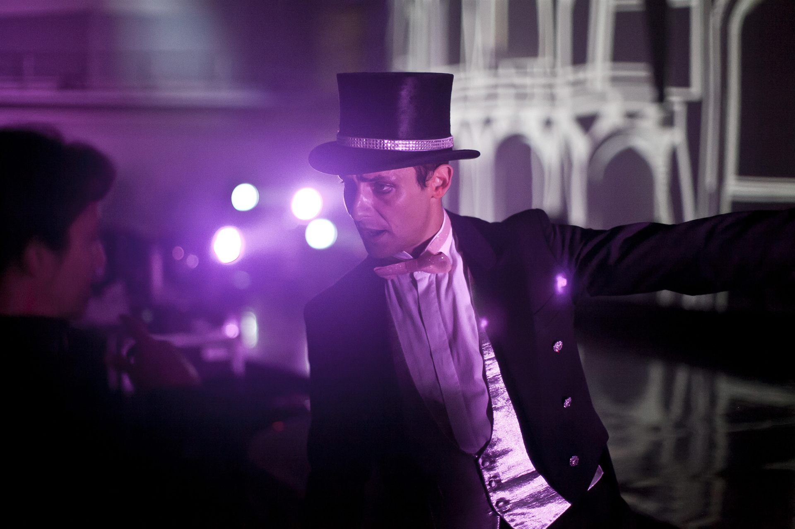
Pablo Moyano & Roberta Beccarini
Tango
Coppia di tango di fama internazionale, Pablo Moyano e Roberta Beccarini fondono la tradizione del tango argentino con la sensibilità della danza contemporanea. Sulla scena della Casa delle Armi hanno ballato il tango sulle musiche di Il Postino, eseguite dal vivo al pianoforte da Luis Bacalov, in un momento di rara intensità artistica che ha unito musica da Oscar e danza in un’unica emozione. Internationally acclaimed tango couple, Pablo Moyano and Roberta Beccarini blend the tradition of Argentine tango with the sensibility of contemporary dance. On the stage of the Casa delle Armi they danced tango to the music of Il Postino, performed live at the piano by Luis Bacalov, in a moment of rare artistic intensity that united Oscar-winning music and dance in a single emotion. Couple de tango de renommée internationale, Pablo Moyano et Roberta Beccarini fusionnent la tradition du tango argentin avec la sensibilité de la danse contemporaine. Sur la scène de la Casa delle Armi, ils ont dansé le tango sur les musiques d’Il Postino, interprétées en direct au piano par Luis Bacalov, dans un moment d’une rare intensité artistique unissant musique oscarísée et danse.
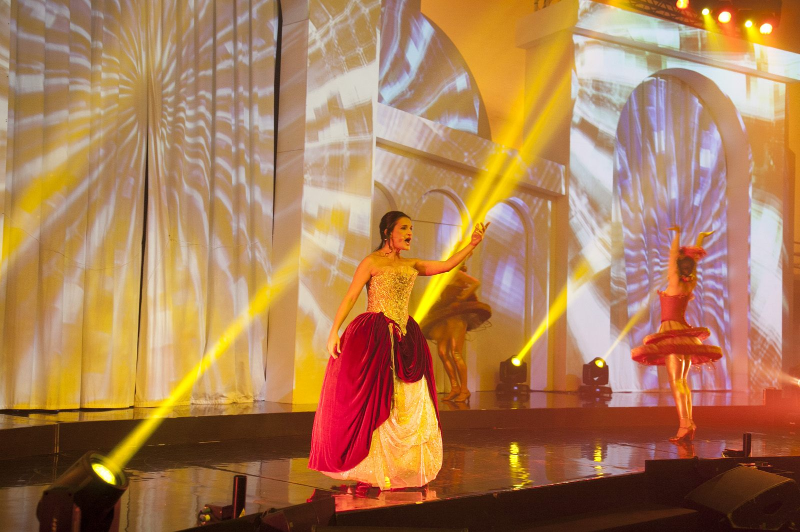
Giacinta Nicotra
Soprano · Atto I
Soprano italiana, ha interpretato il repertorio lirico italiano del primo atto, contribuendo con la sua voce all’atmosfera di bellezza e perfezione che ha aperto lo show. Italian soprano, she performed the Italian lyric repertoire of Act I, contributing with her voice to the atmosphere of beauty and perfection that opened the show. Soprano italienne, elle a interprété le répertoire lyrique italien de l’Acte I, contribuant par sa voix à l’atmosphère de beauté et de perfection qui ouvrait le spectacle.
Tags